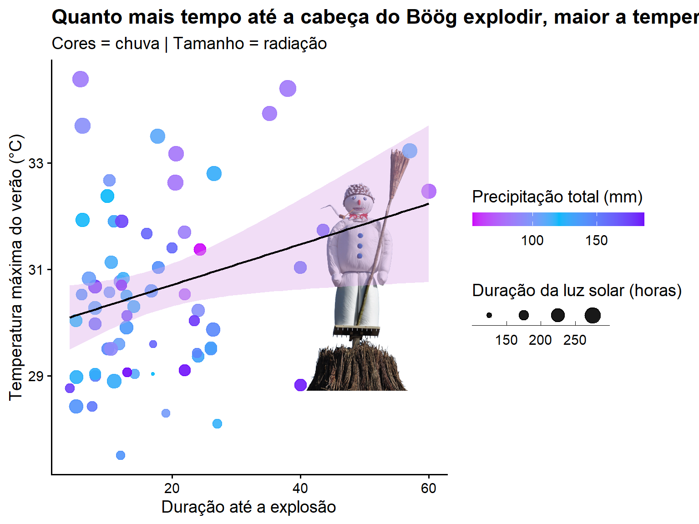

TidyTuesday is a weekly data visualization challenge that I use as a creative and learning space. Each week, a new dataset is posted in the tidytuesday project’s github, which is organized by the Data Science Learning Community, and participants are invited to explore and visualize the data using R. For me, it’s an opportunity to experiment with new ideas, improve my coding and data-storytelling skills, and turn raw data into clear and engaging visuals.
I also often use these datasets in my classes, giving students the chance to explore and learn from in real-world data.
2025
Week 32
Show code
tuesdata<-tidytuesdayR::tt_load('2025-08-12')attribution_studies<-tuesdata$attribution_studieslibrary(tidyverse)atr_event<-attribution_studies%>%filter(study_focus=="Event")paleta<-c("#C5B0CD","#98A1BC","#A2AF9B", "#D1A980","#B9375D", "#640D5F","#9ECAD6", "#34699A", "#2A1458","#273F4F", "#FE7743", "#DC3C22")plot2<-ggplot((filter(atr_event, cb_region!="Northern hemisphere")), aes(x=cb_region, fill=event_type))+geom_bar(stat="count", position=position_dodge2(preserve="single"), alpha=0.8)+labs(x ="Region", y ="Number of events", fill ="Event Type:", title ="Number and types of extreme weather events across the World", subtitle ="Plot for TidyTuesday - DataChaos")+facet_wrap(~cb_region, scales="free", strip.position="bottom")+scale_y_continuous(expand=c(0,0))+theme_bw()+scale_fill_manual(values=paleta)+guides(fill =guide_legend(label.position ="top"))+theme(axis.text.x =element_blank(), axis.title.x =element_blank(),#strip.placement = "outside",#legend.position = "bottom", strip.background.y =element_rect(fill ="white", color ="white"), strip.background.x =element_rect(fill ="white", color ="black"), strip.text.x =element_text(face="bold", size=9), legend.text =element_text(size =8), legend.title =element_text(size =10), legend.key.size =unit(0.3, "cm"), plot.subtitle =element_text(size=10, face="italic"), axis.ticks.x =element_blank())
plot2
Show code
plot<-ggplot(filter(atr_event, cb_region!="Northern hemisphere"))+geom_bar(aes(x =forcats::fct_infreq(cb_region), fill =event_type), alpha=0.8)+labs(x =" ", y ="Number of events", fill ="Event Type", title ="Number and types of extreme weather events across the World", subtitle ="Plot for TidyTuesday - DataChaos")+scale_y_continuous(expand=c(0,0), limits=c(0,180))+theme_classic()+scale_fill_manual(values=paleta)+coord_flip()+theme(legend.position=c(0.8,0.75), legend.text =element_text(size =8), legend.title =element_text(size =10), legend.key.size =unit(0.3, "cm"), plot.title =element_text(margin =margin(l =-120,b=5, unit ="pt")), plot.subtitle =element_text(size=10, face="italic",margin =margin(l =-120,b=10, unit ="pt")))
plot
Week 34
Show code
tuesdata<-tidytuesdayR::tt_load('2025-08-26')billboard<-tuesdata$billboardtopics<-tuesdata$topicsbillboard<-billboard%>%mutate(year =year(date))%>%mutate(decade =factor(year%/%10*10))p1<-ggplot(filter(billboard, year!="2025"), aes(x =factor(year), fill =factor(artist_male)))+geom_bar(position ="fill", alpha=0.8)+labs(x ="Ano", y ="Proporção de artistas", fill ="Gênero", title ="Proporção de artistas no ranking musical por gênero", subtitle =str_wrap("Distribuição percentual de artistas masculinos, femininos e não-binários no top das paradas musicais de 1958-2024", 140), caption ="Fonte: Billboard Hot 100 Number Ones Database")+scale_fill_manual(values=c("#FF9F00","#03A6A1","#F4631E", "#CB0404"), labels =c("Mulheres", "Homens", "Mix", "Não-binários"))+theme_minimal(base_size =14)+theme(axis.text.x =element_text(angle=45, vjust=1, size=8), legend.position ="none", plot.background =element_rect(fill ="grey99", color =NA), axis.title =element_blank(), axis.text.y =element_blank(), panel.grid.major.y =element_blank(), panel.grid.minor.y =element_blank(), plot.title =element_text(face ="bold", size =16), plot.subtitle =element_text(lineheight =1), plot.caption =element_text(margin =margin(10, 0, 0, 0), hjust =0), plot.margin =margin(10, 40, 10, 20))+annotate(geom ="label", x="1995", y =0.9, label ="Mulheres", fill="white", color="#FF9F00")+annotate(geom ="label", x="1980", y =0.5, label ="Homens", fill="white", color="#03A6A1")+annotate(geom ="label", x="1975", y =0.1, label ="Mix", fill="white", color="#F4631E")+annotate(geom ="label", x="2015", y =0, label ="Não binário", fill="white", color="#CB0404")
p1
Show code
sankey.data<-billboard%>%select(year,decade, cdr_genre, songwriter_male, artist_male, songwriter_white, artist_white)%>%mutate(songwriter_gender =case_when(songwriter_male==0~"Mulher",songwriter_male==1~"Homem",songwriter_male==2~"Mix",songwriter_male==3~"Não-binário"), artist_gender =case_when(artist_male==0~"Mulher",artist_male==1~"Homem",artist_male==2~"Mix",artist_male==3~"Não-binário"), songrwriter_race =case_when(songwriter_white==0~"Não branco",songwriter_white==1~"Branco",songwriter_white==2~"Mix"), artist_race =case_when(artist_white==0~"Não branco",artist_white==1~"Branco",artist_white==2~"Mix"))library(ggsankey)sankey.data.flow<-na.omit(sankey.data)%>%mutate(cdr_genre =str_remove(cdr_genre, ";.*"))%>%group_by(decade)%>%mutate(decade_n =n())%>%ungroup()%>%group_by(decade, cdr_genre)%>%summarise(n =n(), decade_n, prop =n/decade_n)%>%distinct()pal<-c("#264653","#287271", "#2a9d8f", "#8ab17d", "#e9c46a", "#efb366","#f4a261","#ee8959","#e76f51")p2<-ggplot(sankey.data.flow, aes(x =decade, node =cdr_genre, fill =cdr_genre, value =prop, label =cdr_genre))+geom_sankey_bump()+scale_fill_manual(values=pal)+labs( title ="Proporção de representatividade de gêneros musicais no ranking", subtitle =str_wrap("Distribuição percentual dos gêneros musicais no top das paradas musicais por década", 140), caption ="Fonte: Billboard Hot 100 Number Ones Database")+theme_minimal()+ylim(-0.8,1)+guides(fill =guide_legend(nrow =3))+theme(legend.title =element_blank(), axis.title =element_blank(), axis.text.y =element_blank(), legend.position =c(0.75,0.9), panel.background =element_rect(fill ="transparent", color =NA), plot.background =element_rect(fill ="transparent", color =NA), panel.grid.major.y =element_blank(), panel.grid.minor.y =element_blank(), plot.title =element_text(face ="bold", size =16), plot.subtitle =element_text(lineheight =1), plot.caption =element_text(margin =margin(10, 0, 0, 0), hjust =0), plot.margin =margin(10, 40, 10, 20), legend.key.size =unit(0.3, "cm"))
p2
Week 36
Show code
tuesdata<-tidytuesdayR::tt_load('2025-09-09')rank_by_year<-tuesdata$rank_by_yearlowest.rank<-rank_by_year%>%group_by(country)%>%summarise_if(is.numeric, mean)%>%slice_max(order_by =rank, n =5)lowest<-rank_by_year%>%filter(country%in%lowest.rank$country)highest.rank<-rank_by_year%>%group_by(country)%>%summarise_if(is.numeric, mean)%>%slice_min(order_by =rank, n =5)highest<-rank_by_year%>%filter(country%in%highest.rank$country)toplow<-lowest%>%full_join(highest)library(ggridges)toplow$country<-factor(toplow$country, levels=c("Afghanistan","Iraq","Palestinian Territory","Pakistan","Somalia","Sweden","Japan","Denmark","Finland","Germany"))library(forcats)library(ggstream)toplow$country<-fct_rev(toplow$country)paleta<-c("#124170", "#26667F","#78B9B5", "#67C090", "#5E936C", "#8A0000", "#C83F12","#FFE100","#FF9B00", "#EA2F14")plot<-ggplot(filter(toplow, year>=2010), aes(year, visa_free_count, fill =country))+geom_stream(type ="ridge" ,bw=1, alpha=0.7)+scale_fill_manual(values=paleta)+scale_y_continuous(expand =c(0,0))+scale_x_continuous(breaks=c(2010,2015,2020,2025),labels =c("2010","2015","2020","2025"))+coord_cartesian(clip ="off")+theme_classic()+labs(caption ="Figura feita usando Henley & Partners Passport Index API dataset")+theme(axis.title =element_blank(), axis.line.x=element_line(linewidth =0.75), axis.line.y=element_blank(), axis.ticks.y=element_blank(), plot.margin =margin(20,120,20,20), legend.position="none", panel.grid =element_blank(), axis.text.y=element_blank(), axis.text.x =element_text(size=12, margin =margin(5,0,0,0)))+annotate("text", x =2025, y =c(1200, 1000, 750,550,300,200,150,100,60,20), label =c("Top 1: Germany","Top 2: Finland","Top 3: Denmark","Top 4: Japan","Top 5: Sweden","Last 5: Somalia","Last 4: Pakistan","Last 3: Palestinian Territory","Last 2: Iraq","Last 1: Afghanistan"), hjust=0, size=3.5, lineheight=.8, fontface="bold", color=paleta)+annotate("text", x =2010.5, y =1300, label ="Ranking global:\nOs 5 países com maior e menor mobilidade", hjust=0, size=7, lineheight=.9, fontface="bold", color="black")+annotate("text", x =2010, y =c(1200, 1100,900, 700,500,250,150,110,80,50,20), label =c("Min-Máx","161-194","162-193","169-192","160-194","163-193","28-36","28-36","15-40","27-31","24-30"), hjust=1, size=3, lineheight=.8, fontface="bold", color=c("black","#124170", "#26667F","#78B9B5", "#67C090", "#5E936C", "#8A0000", "#C83F12","#FFE100","#FF9B00", "#EA2F14"))
plot
Week 39
Show code
tuesdata<-tidytuesdayR::tt_load('2025-09-30')cranes<-tuesdata$cranescranes<-cranes%>%mutate(year =year(date))%>%mutate(interval =factor(year%/%5*5))%>%mutate(month =month(date))library(ggridges)cranes_clean<-cranes%>%filter(!is.na(observations))library(png)library(grid)crane_png<-readPNG("crane.png")crane_grob<-rasterGrob(crane_png, interpolate =TRUE)final<-ggplot(cranes_clean, aes(x=observations/1000, fill=as.factor(month), y=fct_rev(interval)))+geom_density_ridges2(alpha=0.7)+labs(x ="Número de observações (x1000)", y ="Intervalos", title ="Distribuição da observação de grous entre os meses entre 1990-2020", subtitle ="Dados obtidos através dos contadores de grous do Lago de Hornborgasjön, Suécia")+scale_fill_manual(values=c("#C1DBB3","#FAEDCA", "#F2C078","#FE5D26", "#075B5E"), labels =c("Março", "Abril", "Agosto", "Setembro", "Outubro"), name ="Mês")+theme_ridges()+guides(fill=guide_legend(ncol=2))+theme(legend.position =c(0.65,0.9), legend.title =element_blank(), axis.title.y =element_blank())+annotation_custom(crane_grob, xmin=17, xmax=30, ymin="2010", ymax="1990")
tuesdata<-tidytuesdayR::tt_load(2025, week =46)holmes<-tuesdata$holmeslibrary(tidytext)bing<-get_sentiments("bing")sentiment<-holmes%>%mutate(speaker =case_when(str_detect(text, "Holmes said|said Holmes|Holmes asked|asked Holmes")~"Holmes",str_detect(text, "Watson said|said Watson|I said|said I|I asked|I answered")~"Watson",TRUE~"Other"))%>%filter(speaker!="Other")%>%unnest_tokens(word, text)%>%inner_join(bing, by ="word")%>%count(book, speaker, sentiment, name ="lines")%>%group_by(book, speaker)%>%mutate(prop =lines/sum(lines))%>%ungroup()%>%group_by(book)%>%filter(n_distinct(speaker)==2)p<-ggplot(sentiment, aes(x =book, y =prop, fill =sentiment))+geom_col(position ="fill", alpha=0.7)+scale_fill_manual(values =c("#2c003a","#2d5867"), labels=c("Negativo", "Positivo"))+scale_y_continuous(expand=c(0,0))+coord_flip()+labs(title ="Quem é mais mau-humorado nas histórias de Sherlock Holmes?", subtitle ="Proporção de linhas em que o sentimento é negativo ou positivo", x =NULL, y ="Proporção de linhas", fill ="Sentimento:")+theme_minimal(base_size =12)+facet_wrap(~speaker)+theme(strip.background =element_rect(fill="#878787", color="#878787"), strip.text =element_text(size=14, color="#1e2e4d"), panel.spacing =unit(2, "lines"), plot.title=element_text(colour="#1e2e4d", size=15, hjust=1), plot.subtitle =element_text(colour="#1e2e4d", size=14, hjust=1), legend.position ="top", legend.justification ="left", legend.direction ="vertical", legend.spacing.x =unit(0.2, "cm"), legend.text =element_text(size=10), legend.title =element_text(size=10), plot.margin =margin(t =5, r =20, b =5, l =5))
Call:
lm(formula = tre200mx ~ duration, data = sech)
Residuals:
Min 1Q Median 3Q Max
-2.9004 -1.2478 -0.1033 0.7868 4.4100
Coefficients:
Estimate Std. Error t value Pr(>|t|)
(Intercept) 29.94258 0.35572 84.175 <2e-16 ***
duration 0.03815 0.01677 2.275 0.0263 *
---
Signif. codes: 0 '***' 0.001 '**' 0.01 '*' 0.05 '.' 0.1 ' ' 1
Residual standard error: 1.593 on 63 degrees of freedom
(2 observations deleted due to missingness)
Multiple R-squared: 0.07591, Adjusted R-squared: 0.06124
F-statistic: 5.175 on 1 and 63 DF, p-value: 0.02632
Show code
library(png)library(grid)img<-readPNG("boog.png")g<-rasterGrob(img, interpolate =TRUE)plot<-ggplot(sech, aes(duration,tre200mx))+annotation_custom(g, xmin =40, xmax =68, ymin =27, ymax =35)+geom_point(aes(colour=rre150m0, size=sre000m0), alpha =0.9)+geom_smooth(method="lm", se =TRUE, colour ="black", fill="#DCA9E8", linewidth =0.8)+labs(x="Duração até a explosão", y="Temperatura máxima do verão (°C)", title ="Quanto mais tempo até a cabeça do Böög explodir, maior a temperatura do verão", subtitle ="Cores = chuva | Tamanho = radiação")+scale_size_continuous(name ="Duração da luz solar (horas)", guide =guide_bins(direction ="horizontal", barheight =unit(4, "mm"), barwidth =unit(10, "mm"), title.position ="top"))+scale_color_gradient2(low ="#CC07FA", high ="#7007FA", mid ="#07B9FA", midpoint =120, name ="Precipitação total (mm)", guide =guide_colorbar( direction ="horizontal", barheight =unit(4, "mm"), barwidth =unit(50, "mm"), title.position ="top"))+theme_classic(base_size =14)+theme(plot.title =element_text(face ="bold"), legend.position ="right")
plot

Source Code
---title: "TidyTuesday"format: html: code-fold: true code-summary: "Show code" fig-width: 8 fig-height: 6execute: echo: true warning: false message: false---**TidyTuesday** is a weekly data visualization challenge that I use as a creative and learning space. Each week, a new dataset is posted in the [tidytuesday project's github](https://github.com/rfordatascience/tidytuesday), which is organized by the [Data Science Learning Community](https://github.com/rfordatascience/tidytuesday/tree/main), and participants are invited to explore and visualize the data using R. For me, it’s an opportunity to experiment with new ideas, improve my coding and data-storytelling skills, and turn raw data into clear and engaging visuals. I also often use these datasets in my classes, giving students the chance to explore and learn from in real-world data.## 2025### Week 32```{r}#| code-fold: true#| code-summary: "Show code"tuesdata <- tidytuesdayR::tt_load('2025-08-12')attribution_studies <- tuesdata$attribution_studieslibrary(tidyverse)atr_event <- attribution_studies %>%filter(study_focus =="Event")paleta <-c("#C5B0CD","#98A1BC","#A2AF9B", "#D1A980","#B9375D", "#640D5F","#9ECAD6", "#34699A", "#2A1458","#273F4F", "#FE7743", "#DC3C22")plot2 <-ggplot((filter(atr_event, cb_region !="Northern hemisphere")), aes(x=cb_region, fill=event_type))+geom_bar(stat="count", position=position_dodge2(preserve="single"), alpha=0.8)+labs(x ="Region", y ="Number of events", fill ="Event Type:",title ="Number and types of extreme weather events across the World",subtitle ="Plot for TidyTuesday - DataChaos") +facet_wrap(~cb_region, scales="free", strip.position="bottom")+scale_y_continuous(expand=c(0,0))+theme_bw()+scale_fill_manual(values=paleta)+guides(fill =guide_legend(label.position ="top"))+theme(axis.text.x =element_blank(),axis.title.x =element_blank(),#strip.placement = "outside",#legend.position = "bottom",strip.background.y =element_rect(fill ="white", color ="white"),strip.background.x =element_rect(fill ="white", color ="black"),strip.text.x =element_text(face="bold", size=9),legend.text =element_text(size =8),legend.title =element_text(size =10),legend.key.size =unit(0.3, "cm"),plot.subtitle =element_text(size=10, face="italic"),axis.ticks.x =element_blank())``````{r}plot2``````{r}#| code-fold: true#| code-summary: "Show code"plot <-ggplot(filter(atr_event, cb_region !="Northern hemisphere")) +geom_bar(aes(x = forcats::fct_infreq(cb_region), fill = event_type), alpha=0.8) +labs(x =" ", y ="Number of events", fill ="Event Type", title ="Number and types of extreme weather events across the World",subtitle ="Plot for TidyTuesday - DataChaos") +scale_y_continuous(expand=c(0,0), limits=c(0,180))+theme_classic()+scale_fill_manual(values=paleta)+coord_flip()+theme(legend.position=c(0.8,0.75),legend.text =element_text(size =8),legend.title =element_text(size =10),legend.key.size =unit(0.3, "cm"),plot.title =element_text(margin =margin(l =-120,b=5, unit ="pt")),plot.subtitle =element_text(size=10, face="italic",margin =margin(l =-120,b=10, unit ="pt")))``````{r}plot```### Week 34```{r}#| code-fold: true#| code-summary: "Show code"tuesdata <- tidytuesdayR::tt_load('2025-08-26')billboard <- tuesdata$billboardtopics <- tuesdata$topicsbillboard <- billboard %>%mutate(year =year(date)) %>%mutate(decade =factor(year %/%10*10))p1 <-ggplot(filter(billboard, year !="2025"), aes(x =factor(year), fill =factor(artist_male))) +geom_bar(position ="fill", alpha=0.8) +labs(x ="Ano", y ="Proporção de artistas", fill ="Gênero",title ="Proporção de artistas no ranking musical por gênero",subtitle =str_wrap("Distribuição percentual de artistas masculinos, femininos e não-binários no top das paradas musicais de 1958-2024", 140),caption ="Fonte: Billboard Hot 100 Number Ones Database") +scale_fill_manual(values=c("#FF9F00","#03A6A1","#F4631E", "#CB0404"), labels =c("Mulheres", "Homens", "Mix", "Não-binários")) +theme_minimal(base_size =14)+theme(axis.text.x =element_text(angle=45, vjust=1, size=8),legend.position ="none",plot.background =element_rect(fill ="grey99", color =NA),axis.title =element_blank(),axis.text.y =element_blank(),panel.grid.major.y =element_blank(),panel.grid.minor.y =element_blank(),plot.title =element_text(face ="bold", size =16),plot.subtitle =element_text(lineheight =1),plot.caption =element_text(margin =margin(10, 0, 0, 0), hjust =0),plot.margin =margin(10, 40, 10, 20))+annotate(geom ="label", x="1995", y =0.9, label ="Mulheres", fill="white", color="#FF9F00")+annotate(geom ="label", x="1980", y =0.5, label ="Homens", fill="white", color="#03A6A1")+annotate(geom ="label", x="1975", y =0.1, label ="Mix", fill="white", color="#F4631E")+annotate(geom ="label", x="2015", y =0, label ="Não binário", fill="white", color="#CB0404")``````{r}p1``````{r}#| code-fold: true#| code-summary: "Show code"sankey.data <- billboard %>%select(year,decade, cdr_genre, songwriter_male, artist_male, songwriter_white, artist_white) %>%mutate(songwriter_gender =case_when(songwriter_male ==0~"Mulher", songwriter_male ==1~"Homem", songwriter_male ==2~"Mix", songwriter_male ==3~"Não-binário"),artist_gender =case_when(artist_male ==0~"Mulher", artist_male ==1~"Homem", artist_male ==2~"Mix", artist_male ==3~"Não-binário"),songrwriter_race =case_when(songwriter_white ==0~"Não branco", songwriter_white ==1~"Branco", songwriter_white ==2~"Mix"),artist_race =case_when(artist_white ==0~"Não branco", artist_white ==1~"Branco", artist_white ==2~"Mix"))library(ggsankey)sankey.data.flow <-na.omit(sankey.data) %>%mutate(cdr_genre =str_remove(cdr_genre, ";.*")) %>%group_by(decade) %>%mutate(decade_n =n()) %>%ungroup() %>%group_by(decade, cdr_genre) %>%summarise(n =n(), decade_n, prop = n / decade_n) %>%distinct()pal <-c("#264653","#287271", "#2a9d8f", "#8ab17d", "#e9c46a", "#efb366","#f4a261","#ee8959","#e76f51")p2 <-ggplot(sankey.data.flow, aes(x = decade, node = cdr_genre, fill = cdr_genre, value = prop, label = cdr_genre)) +geom_sankey_bump() +scale_fill_manual(values=pal)+labs( title ="Proporção de representatividade de gêneros musicais no ranking",subtitle =str_wrap("Distribuição percentual dos gêneros musicais no top das paradas musicais por década", 140),caption ="Fonte: Billboard Hot 100 Number Ones Database") +theme_minimal() +ylim(-0.8,1)+guides(fill =guide_legend(nrow =3))+theme(legend.title =element_blank(),axis.title =element_blank(),axis.text.y =element_blank(),legend.position =c(0.75,0.9),panel.background =element_rect(fill ="transparent", color =NA),plot.background =element_rect(fill ="transparent", color =NA),panel.grid.major.y =element_blank(),panel.grid.minor.y =element_blank(),plot.title =element_text(face ="bold", size =16),plot.subtitle =element_text(lineheight =1),plot.caption =element_text(margin =margin(10, 0, 0, 0), hjust =0),plot.margin =margin(10, 40, 10, 20),legend.key.size =unit(0.3, "cm"))``````{r}p2 ```### Week 36```{r}#| code-fold: true#| code-summary: "Show code"tuesdata <- tidytuesdayR::tt_load('2025-09-09')rank_by_year <- tuesdata$rank_by_yearlowest.rank <- rank_by_year %>%group_by(country) %>%summarise_if(is.numeric, mean) %>%slice_max(order_by = rank, n =5)lowest <- rank_by_year %>%filter(country %in% lowest.rank$country)highest.rank <- rank_by_year %>%group_by(country) %>%summarise_if(is.numeric, mean) %>%slice_min(order_by = rank, n =5)highest <- rank_by_year %>%filter(country %in% highest.rank$country)toplow <- lowest %>%full_join(highest)library(ggridges)toplow$country <-factor(toplow$country, levels=c("Afghanistan","Iraq","Palestinian Territory","Pakistan","Somalia","Sweden","Japan","Denmark","Finland","Germany"))library(forcats)library(ggstream)toplow$country <-fct_rev(toplow$country)paleta <-c("#124170", "#26667F","#78B9B5", "#67C090", "#5E936C", "#8A0000", "#C83F12","#FFE100","#FF9B00", "#EA2F14")plot <-ggplot(filter(toplow, year>=2010), aes(year, visa_free_count, fill = country)) +geom_stream(type ="ridge" ,bw=1, alpha=0.7)+scale_fill_manual(values=paleta) +scale_y_continuous(expand =c(0,0)) +scale_x_continuous(breaks=c(2010,2015,2020,2025),labels =c("2010","2015","2020","2025")) +coord_cartesian(clip ="off") +theme_classic()+labs(caption ="Figura feita usando Henley & Partners Passport Index API dataset")+theme(axis.title =element_blank(), axis.line.x=element_line(linewidth =0.75),axis.line.y=element_blank(),axis.ticks.y=element_blank(),plot.margin =margin(20,120,20,20),legend.position="none",panel.grid =element_blank(),axis.text.y=element_blank(),axis.text.x =element_text(size=12,margin =margin(5,0,0,0)))+annotate("text", x =2025, y =c(1200, 1000, 750,550,300,200,150,100,60,20),label =c("Top 1: Germany","Top 2: Finland","Top 3: Denmark","Top 4: Japan","Top 5: Sweden","Last 5: Somalia","Last 4: Pakistan","Last 3: Palestinian Territory","Last 2: Iraq","Last 1: Afghanistan"),hjust=0,size=3.5,lineheight=.8,fontface="bold",color=paleta)+annotate("text", x =2010.5, y =1300,label ="Ranking global:\nOs 5 países com maior e menor mobilidade",hjust=0,size=7,lineheight=.9,fontface="bold",color="black")+annotate("text", x =2010, y =c(1200, 1100,900, 700,500,250,150,110,80,50,20),label =c("Min-Máx","161-194","162-193","169-192","160-194","163-193","28-36","28-36","15-40","27-31","24-30"),hjust=1,size=3,lineheight=.8,fontface="bold", color=c("black","#124170", "#26667F","#78B9B5", "#67C090", "#5E936C", "#8A0000", "#C83F12","#FFE100","#FF9B00", "#EA2F14"))``````{r}plot```### Week 39```{r}#| code-fold: true#| code-summary: "Show code"tuesdata <- tidytuesdayR::tt_load('2025-09-30')cranes <- tuesdata$cranescranes <- cranes %>%mutate(year =year(date)) %>%mutate(interval =factor(year %/%5*5)) %>%mutate(month =month(date))library(ggridges)cranes_clean <- cranes %>%filter(!is.na(observations)) library(png)library(grid)crane_png <-readPNG("crane.png")crane_grob <-rasterGrob(crane_png, interpolate =TRUE)final <-ggplot(cranes_clean, aes(x=observations/1000, fill=as.factor(month), y=fct_rev(interval))) +geom_density_ridges2(alpha=0.7)+labs(x ="Número de observações (x1000)",y ="Intervalos",title ="Distribuição da observação de grous entre os meses entre 1990-2020",subtitle ="Dados obtidos através dos contadores de grous do Lago de Hornborgasjön, Suécia" ) +scale_fill_manual(values=c("#C1DBB3","#FAEDCA", "#F2C078","#FE5D26", "#075B5E"),labels =c("Março", "Abril", "Agosto", "Setembro", "Outubro"),name ="Mês")+theme_ridges()+guides(fill=guide_legend(ncol=2))+theme(legend.position =c(0.65,0.9), legend.title =element_blank(),axis.title.y =element_blank())+annotation_custom(crane_grob, xmin=17, xmax=30, ymin="2010", ymax="1990")``````{r}final```### Week 43```{r}#| code-fold: true#| code-summary: "Show code"tuesdata <- tidytuesdayR::tt_load(2025, week =43)prizes <- tuesdata$prizeslibrary(tidyverse)library(waffle)decades2 <- prizes %>%mutate(race =case_when( ethnicity_macro %in%c("African", "Asian", "Caribbenan", "Black British", "Non-White American") ~"Non-White",TRUE~"White")) %>%mutate(decade = prize_year - (prize_year %%10)) %>%group_by(decade, race, gender) %>%summarise(count =n(), .groups="drop") %>%group_by(decade) %>%mutate(Total_Decada =sum(count),prop = (count /Total_Decada)*100) %>%ungroup()week43 <-ggplot(decades2, aes(fill =interaction(race, gender))) +geom_waffle(aes(values = prop), color ="white", size =0.8, n_rows =15) +labs(title ="Representação de gênero e etnia nos prêmios literários Britânicos nas diferentes décadas",subtitle ="Selected British Literary Prizes (1990-2022) dataset") +theme_void() +facet_grid(~decade, switch ="x")+scale_fill_manual(values=c("#758A93", "#ECD5BC","#F0E491", "#E9B63B", "#C66E52"),labels =c("Non-White.man"="Homens não-brancos", "White.man"="Homens brancos", "Non-White.non-binary"="Não-binários não-branc@s","Non-White.woman"="Mulheres não-brancas","White.woman"="Mulheres brancas"), guide=guide_legend(ncol=2))+theme(legend.position ="top",legend.justification ="right",legend.text =element_text(size=10),legend.key.spacing.y =unit(0.1, "cm"),legend.key.spacing.x =unit(0.1, "cm"),plot.title =element_text(size=18),plot.subtitle =element_text(size=15, face="italic"),legend.title =element_blank(),strip.placement ="outside",strip.text =element_text(size=15))``````{r}week43```### Week 46```{r}#| code-fold: true#| code-summary: "Show code"tuesdata <- tidytuesdayR::tt_load(2025, week =46)holmes <- tuesdata$holmeslibrary(tidytext)bing <-get_sentiments("bing")sentiment <- holmes %>%mutate(speaker =case_when(str_detect(text, "Holmes said|said Holmes|Holmes asked|asked Holmes") ~"Holmes",str_detect(text, "Watson said|said Watson|I said|said I|I asked|I answered") ~"Watson",TRUE~"Other")) %>%filter(speaker !="Other") %>%unnest_tokens(word, text) %>%inner_join(bing, by ="word") %>%count(book, speaker, sentiment, name ="lines") %>%group_by(book, speaker) %>%mutate(prop = lines /sum(lines)) %>%ungroup() %>%group_by(book) %>%filter(n_distinct(speaker) ==2) p <-ggplot(sentiment, aes(x = book, y = prop, fill = sentiment)) +geom_col(position ="fill", alpha=0.7) +scale_fill_manual(values =c( "#2c003a","#2d5867"), labels=c("Negativo", "Positivo")) +scale_y_continuous(expand=c(0,0))+coord_flip() +labs(title ="Quem é mais mau-humorado nas histórias de Sherlock Holmes?",subtitle ="Proporção de linhas em que o sentimento é negativo ou positivo",x =NULL, y ="Proporção de linhas", fill ="Sentimento:") +theme_minimal(base_size =12)+facet_wrap(~speaker)+theme(strip.background =element_rect(fill="#878787", color="#878787"),strip.text =element_text(size=14, color="#1e2e4d"),panel.spacing =unit(2, "lines"),plot.title=element_text(colour="#1e2e4d", size=15, hjust=1),plot.subtitle =element_text(colour="#1e2e4d", size=14, hjust=1), legend.position ="top",legend.justification ="left",legend.direction ="vertical",legend.spacing.x =unit(0.2, "cm"),legend.text =element_text(size=10),legend.title =element_text(size=10),plot.margin =margin(t =5, r =20, b =5, l =5))``````{r}p```### Week 48```{r}#| code-fold: true#| code-summary: "Show code"tuesdata <- tidytuesdayR::tt_load(2025, week =48)sech <- tuesdata$sechselaeutensummary(lm(tre200mx~duration, data=sech))library(png)library(grid)img <-readPNG("boog.png")g <-rasterGrob(img, interpolate =TRUE)plot <-ggplot(sech, aes(duration,tre200mx))+annotation_custom(g, xmin =40, xmax =68,ymin =27, ymax =35)+geom_point(aes(colour=rre150m0, size=sre000m0), alpha =0.9)+geom_smooth(method="lm", se =TRUE,colour ="black",fill="#DCA9E8",linewidth =0.8)+labs(x="Duração até a explosão", y="Temperatura máxima do verão (°C)",title ="Quanto mais tempo até a cabeça do Böög explodir, maior a temperatura do verão",subtitle ="Cores = chuva | Tamanho = radiação")+scale_size_continuous(name ="Duração da luz solar (horas)",guide =guide_bins(direction ="horizontal",barheight =unit(4, "mm"),barwidth =unit(10, "mm"),title.position ="top"))+scale_color_gradient2(low ="#CC07FA", high ="#7007FA", mid ="#07B9FA", midpoint =120,name ="Precipitação total (mm)",guide =guide_colorbar(direction ="horizontal",barheight =unit(4, "mm"),barwidth =unit(50, "mm"),title.position ="top")) +theme_classic(base_size =14) +theme(plot.title =element_text(face ="bold"),legend.position ="right")``````{r}plot```